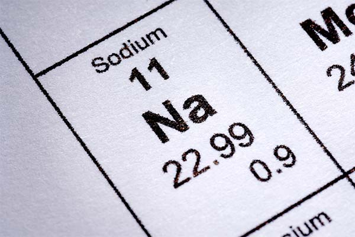
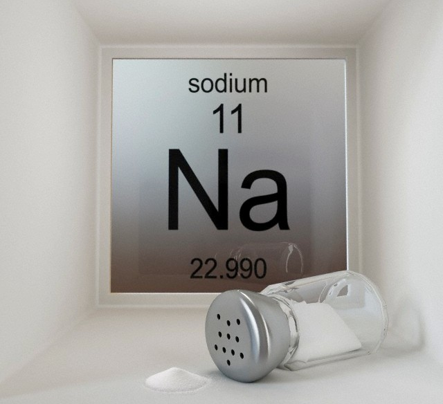

Натрий
На́трий (химический символ — Na, от лат. Natrium) — химический элемент 1-й группы (по устаревшей классификации — главной подгруппы первой группы, IA), третьего периода периодической системы химических элементов Д. И. Менделеева. Атомный номер — 11. В виде простого вещества натрий — это очень лёгкий (0,971 г/см3), мягкий, химически активный щелочной металл серебристо-белого цвета. На внешнем энергетическом уровне натрий имеет один электрон, который он легко отдаёт, превращаясь в положительно заряженный катион Na+..

Природные соединения натрия известны с древних времён. В эпоху неолита, приблизительно 5–7 тыс. лет назад, в качестве компонента пищи людей вошла в употребление поваренная соль (хлорид натрия) NaCl. В Древнем Египте применяли природную соду (карбонат натрия) Na2CO3 как моющее средство, а также для варки стекла. К началу 18 в. в Западной Европе соли натрия широко применялись в медицине, при выделке кож, крашении тканей. В 1807 г. Г. Дэви электролизом расплава едкого натра NaOH впервые получил расплавленный металлический натрий и дал ему название «содиум» (sodium, от позднелат. soda – сода), которое отражает происхождение этого элемента из соды; название сохранилось в США, Великобритании и некоторых других странах. Название «натрий», происходящее от арабского «натрун» (греч. νίτρον) и первоначально относившееся к природной соде, предложено Й. Берцелиусом в 1811 г. и введено в отечественную химическую номенклатуру Г. И. Гессом в 1831 г.
Натрий получают: электролизом расплава NaCl или расплава NaOH (с добавками других солей для снижения температуры плавления электролита); небольшие количества – разложением азида NaN3. Электролиз NaCl проводят в электролизёрах с диафрагмой. Мировое производство натрия превышает 200 тыс. т/год (2012).
Натрий и его сплавы с калием применяются как жидкие теплоносители в ядерных реакторах; пары́ натрия используются для наполнения газоразрядных ламп; сплавы натрия со свинцом – для изготовления подшипников. Натрий применяется как модификатор алюминиевых и других сплавов, как восстановитель в металлургии, в органическом синтезе, для получения соединений натрия, как катализатор в производстве бутадиенового и других каучуков. Амальгама Na используется при получении NaOH высокой чистоты. Радиоизотопы 22Na и 24Na применяются в медицине (диагностика, лечение лейкемии) и в качестве радиоактивных меток.

У натрия весьма существенная разница между температурами плавления и кипения — почти 800 градусов. Плавитcя он при t около +98 °С, кипит при t +883 °С. Благодаря этому свойству из натрия получается хороший теплоноситель для мощных атомных реакторов, не закипающий до высоких температур.